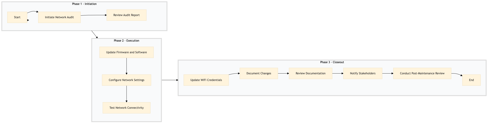

| Role | Steps |
|---|---|
| IT Manager | 1.1 1.2 3.1 3.2 3.3 3.4 3.5 |
| IT Technician | 2.1 2.2 2.3 |
| Step | Name | Role | System | Input | Output | KPI | Dec? | Exc? | Pain Point / Risk |
|---|---|---|---|---|---|---|---|---|---|
| 1.1 | Initiate Network Audit | IT Manager | Oracle OPERA Cloud | Weekly maintenance schedule | Network audit report | Less than 2 hours | N | Y | Inconsistent network performance affecting guest check-in and checkout processes. |
| 1.2 | Review Audit Report | IT Manager | Oracle OPERA Cloud | Network audit report | Maintenance plan | Less than 30 minutes | N | Y | Delays in identifying critical network issues leading to downtime. |
| 2.1 | Update Firmware and Software | IT Technician | Oracle OPERA Cloud, Honeywell INNCOM | Maintenance plan | Updated firmware/software logs | Less than 4 hours | Y | Y | Inability to update critical network components leading to security vulnerabilities. |
| 2.2 | Configure Network Settings | IT Technician | Oracle OPERA Cloud, Honeywell INNCOM | Maintenance plan | Configured network settings | Less than 3 hours | Y | Y | Incorrect configuration causing connectivity issues for guests and staff. |
| 2.3 | Test Network Connectivity | IT Technician | Oracle OPERA Cloud, Honeywell INNCOM | Configured network settings | Connectivity test report | Less than 2 hours | Y | Y | Failure to verify network connectivity leading to unresolved issues. |
| 3.1 | Update WiFi Credentials | IT Technician | Oracle OPERA Cloud, Honeywell INNCOM | Maintenance plan | Updated WiFi credentials | Less than 1 hour | N | Y | Outdated WiFi credentials causing guest frustration and potential security risks. |
| 3.2 | Document Changes | IT Manager | Oracle OPERA Cloud | Updated firmware/software logs, configured network settings, connectivity test report, updated WiFi credentials | Change management document | Less than 1 hour | N | Y | Lack of documentation leading to confusion and potential errors in future maintenance. |
| 3.3 | Review Documentation | IT Manager | Oracle OPERA Cloud | Change management document | Approved change management document | Less than 30 minutes | N | Y | Improper review process causing overlooked issues and potential disruptions. |
| 3.4 | Notify Stakeholders | IT Manager | Oracle OPERA Cloud, Marriott Bonvoy CRM | Approved change management document | Stakeholder notification logs | Less than 1 hour | N | Y | Delayed notifications causing confusion and potential operational disruptions. |
| 3.5 | Conduct Post-Maintenance Review | IT Manager | Oracle OPERA Cloud, Honeywell INNCOM | Approved change management document | Post-maintenance review report | Less than 2 hours | Y | Y | Failure to conduct a thorough review leading to unresolved issues and potential recurrence. |
Manage and maintain the network and WiFi infrastructure at a Marriott full-service hotel to ensure seamless connectivity for guests and staff.